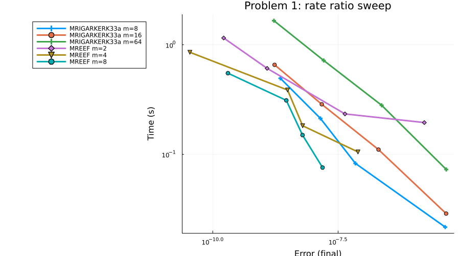

This is my final work product for Google Summer of Code 2026 with SciML. The proposal had two deliverables for OrdinaryDiffEq.jl: migrate solver families from hand-written per-method implementations to generic tableau-driven forms, and build a family of multirate integrators for split ODE systems, finishing with public benchmarks. Both shipped. I merged 71 pull requests into OrdinaryDiffEq.jl, 7 into SciMLBenchmarks.jl, 3 into SciMLOperators.jl, and 1 into NonlinearSolve.jl, with 2 more under review as I write this.
I want to thank Chris for the fast reviews and for holding every PR to the same standard, which taught me more than the code did.
Multirate methods
OrdinaryDiffEq.jl had no multirate solvers when the project started. It now has a registered subpackage, OrdinaryDiffEqMultirate, with ten methods spanning the extrapolated, Adams-Bashforth, multirate-infinitesimal-step and MRI-GARK families, and a second subpackage, OrdinaryDiffEqMultirateImplicit, holding the implicit members so the explicit package stays dependency-light.
# A split problem: cheap stiff fast part f1, expensive slow part f2.
prob = SplitODEProblem(f1, f2, u0, tspan)
sol = solve(prob, MREEF(m = 8)) # extrapolated forward Euler
sol = solve(prob, MRIGARKERK45a()) # explicit MRI-GARK, order 4
sol = solve(prob, MRIGARKESDIRK46a()) # implicit slow stage, stiff-slow-stable
sol = solve(prob, MREIL(m = 4, order = 4)) # linearly implicit, stiff-fast-stable| Description | PR | Status |
|---|---|---|
| MREEF, extrapolated multirate forward Euler (Constantinescu and Sandu 2013) | #3139 | Merged |
| MRAB, multirate Adams-Bashforth | #3707 | Merged |
| MIS2, multirate infinitesimal step (Wensch, Knoth, Galant 2009) | #3717 | Merged |
| Explicit MRI-GARK ERK22a and ERK22b (Sandu 2019) | #3724 | Merged |
| Explicit MRI-GARK ERK33a and ERK45a | #3747 | Merged |
| MRI-GARK slow-forcing accumulation fused | #3741 | Merged |
| Implicit MRI-GARK IRK21a | #3811 | Merged |
| Implicit MRI-GARK ESDIRK34a | #3812 | Merged |
| Implicit MRI-GARK ESDIRK46a | #3886 | Merged |
| MREIL, linearly implicit extrapolated member, plus the package split | #4115 | Merged |
| Multirate work-precision benchmarks | #1629 | Open |
MREIL was the deep end of the project: it factorizes W once per extrapolation column and reuses it across every substep in that column, reuses the Jacobian across rejected steps, and went through six adversarial verification rounds before opening. The most useful thing those rounds established is that it is a W-method: its Richardson extrapolation order survives a frozen or even wrong Jacobian, so a bad Jacobian costs stability rather than accuracy.

Tableau-based solver infrastructure
The second deliverable was moving solver families onto generic, data-driven implementations so a new method is a tableau plus a constructor rather than a hand-written perform_step!.
| Description | PR | Status |
|---|---|---|
| Symplectic drift-kick methods migrated to generic form | #3473 | Merged |
| Verner tableau and interpolant construction specialized | #3591 | Merged |
| CFNLIRK3 migrated to ESDIRKIMEX tableau form | #3651 | Merged |
| ABDF2 bootstrap moved onto the generic cache | #3656 | Merged |
| Sixteen AlJahdali 3S* methods consolidated into the generic 3S dispatch | #3241 | Merged |
| RK46NL folded into the generic 2N dispatch | #3683 | Merged |
| Embedded-pair order-condition test for every adaptive SDIRK and ESDIRK tableau | #3661 | Merged |
| ESDIRK659L2SA broken embedded coefficients caught by that test and fixed | #3662 | Merged |
| Generic stage-predictor menu for ESDIRK methods | #3668 | Merged |
New methods added through that infrastructure: Ralston4 (#3215), the parametric relaxation RK family (#3246), MSRK10, a tenth-order method requested in a four-year-old issue (#3755), the ARS and BHR IMEX-RK schemes (#3704, #3706), the IMEX-SSP family (#3705), and ESDIRK3(2)5L[2]SA (#3827).
Hardening work beyond the proposal
Working in the solver internals surfaced bugs that I fixed as they blocked or adjoined the main work. The largest arc made NonlinearSolve.jl algorithms usable as inner solvers for the implicit steppers.
| Description | PR | Status |
|---|---|---|
| Polyalgorithm inner solvers: crash and silent-stall fixes | #3959 | Merged |
| Same bug class in the Newmark structural solvers | #4112 | Merged |
| Same class for SimpleNonlinearSolve no-init caches | #4137 | Merged |
| W-matrix reuse for NonlinearSolve inner solvers | #3693, #3753, #3703 | Merged |
| Upstream cache accessors for the polyalgorithm fix | #1115 | Merged |
| Adaptive time stepping for Newmark solvers, broken since introduction | #4148 | Merged |
| Taylor-series solver silent wrong answers | #3975, #4116 | Merged |
| Seven DAE benchmarks from the IVP test set | #1480 – #1486 | Merged |
The project arc
March
First methods land
Ralston4 and the parametric relaxation RK family, learning the contribution pipeline end to end.
April
MREEF opens the multirate track
The first multirate solver in the package, with the extrapolation and error-control machinery the later members reuse.
May
Tableau migrations
Symplectic, Verner, CFNLIRK3 and ABDF2 move onto generic forms; the embedded-pair test lands and catches a broken tableau.
June
IMEX schemes and explicit MRI-GARK
ARS, BHR and IMEX-SSP arrive through the new infrastructure; the explicit MRI-GARK ladder completes.
July
Implicit multirate and the hardening arc
IRK21a, ESDIRK34a and ESDIRK46a land on the NonlinearSolve plumbing fixed the same month.
August
MREIL and the benchmarks
The linearly implicit member and the work-precision notebook close both deliverables; this report is the last artifact.
Current state and what is left
Everything above is merged except the two open PRs, which are under review. Remaining future work: register OrdinaryDiffEqMultirateImplicit and add MREIL to the benchmark notebook once released, and the MrGARK family of Roberts, Loffeld, Sarshar, Woodward and Sandu (issue #961), which is scoped but not started.
Future prospects
I plan to stay involved with SciML past the program: the open PRs through review, the MrGARK family, and stochastic Taylor and RODE-Taylor integration as the next arc.
Full contribution lists
- All 68 merged OrdinaryDiffEq.jl PRs
- SciMLBenchmarks.jl PRs
- SciMLOperators and NonlinearSolve: #397, #400, #416, #1115